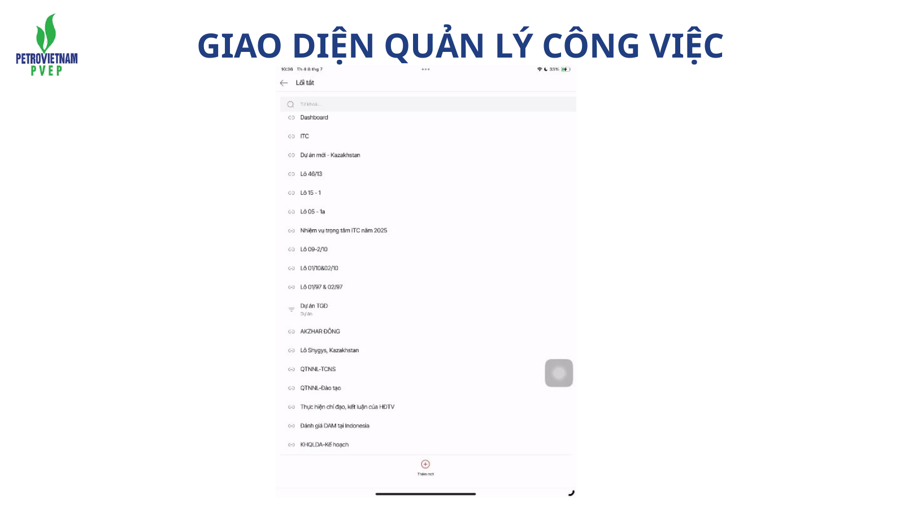
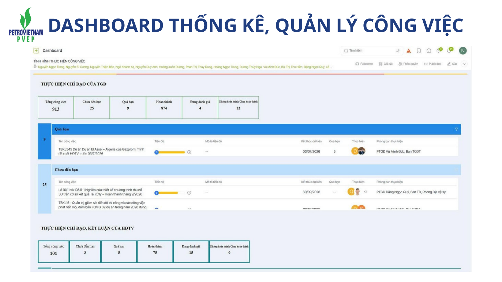

CBNV
PVEP · Chi nhánh và Dự án
Quản trị theo mục tiêu và Đánh giá MĐHTCV
Từ mục tiêu chung đến công việc rõ ràng, dữ liệu minh bạch và kết quả thực.
Tư duy xuyên suốt
Mục tiêu → Công việc → Trách nhiệm → Dữ liệu → Kết quả
Đánh giá là hệ quả của quá trình quản trị công việc, không phải một thao tác tách rời ở cuối kỳ.
Bối cảnh · Nghị quyết 57
Đổi mới phương thức quản trị là một phần của chuyển đổi số
01
KHCN, ĐMST và CĐS
Không chỉ tạo ra công cụ mới mà phải tạo động lực thay đổi cách tổ chức, điều hành và ra quyết định.
→
02
Đổi mới quản trị
Dữ liệu công việc cần trở thành dữ liệu quản trị, giúp kết nối mục tiêu, thực thi và đánh giá kết quả.
Từ định hướng đến giải pháp
Mục tiêu PVN → Nhiệm vụ PVEP → Đổi mới quản trị
PVN
Mục tiêu và định hướng
Nâng cao hiệu quả quản trị, năng suất và năng lực thực thi trong bối cảnh chuyển đổi số.
›
PVEP
Cụ thể hóa thành nhiệm vụ
Chuyển mục tiêu thành công việc có trách nhiệm, đầu ra và thời hạn rõ ràng.
›
GIẢI PHÁP
Quản trị theo mục tiêu
Kết nối giao việc, theo dõi, đánh giá và dữ liệu trên cùng một quy trình quản trị.
Vấn đề cần giải quyết
Ba điểm nghẽn của cách quản trị truyền thống
▦
Dữ liệu phân tán
Thông tin công việc nằm ở nhiều kênh, khó tạo một nguồn dữ liệu thống nhất để theo dõi.
◷
Điều hành chậm
Cấp quản lý khó nhìn thấy trạng thái công việc theo thời gian thực để can thiệp sớm.
◉
Đánh giá thiếu căn cứ
Cuối kỳ phải tổng hợp lại thông tin, dễ phụ thuộc vào báo cáo và cảm nhận.
Đổi mới phương thức quản trị
Từ quản trị truyền thống đến quản trị số theo mục tiêu
TRƯỚC
- Giao việc qua nhiều kênh
- Theo dõi bằng nhắc việc
- Dữ liệu hình thành rời rạc
- Cuối kỳ mới tổng hợp
- Đánh giá nhiều theo cảm nhận
→
SAU
- Mục tiêu được chuyển thành công việc
- Trách nhiệm và đầu ra rõ
- Tiến độ được cập nhật liên tục
- Dữ liệu hình thành trong tác nghiệp
- Đánh giá dựa trên kết quả thực
Nguyên tắc quản trị
Năm nguyên tắc cốt lõi
01 · Mục tiêu cụ thể, có thể đo lường
02 · Hai chiều trong giao và nhận việc
03 · Đo lường khách quan bằng dữ liệu
QUẢN TRỊ
THEO
MỤC TIÊU
THEO
MỤC TIÊU
04 · Tự chủ gắn với trách nhiệm
05 · Phản hồi và cải tiến liên tục
Công việc · Đơn vị quản trị cơ bản
CÔNG VIỆC
Gắn với mục tiêu cụ thể
Có thời hạn
Có đầu ra rõ ràng
Gắn với mục tiêu cụ thể
Có thời hạn
Có đầu ra rõ ràng
Công việc là gì?
Công việc là đơn vị cơ bản để giao trách nhiệm, theo dõi thực hiện và tính điểm đánh giá.
Công việc lớn
Có thể chia thành các giai đoạn độc lập khi mỗi giai đoạn có sản phẩm và mốc thời gian rõ.
Công việc phát sinh
Được ghi nhận khi phát sinh thực tế ngoài kế hoạch và có căn cứ.
Nguồn công việc
Công việc phải hình thành từ nguồn quản trị rõ ràng
01 · Kế hoạch SXKD
02 · Nhiệm vụ trọng tâm
NGUỒN
CÔNG VIỆC
CÔNG VIỆC
03 · Chỉ đạo và giao việc
04 · Văn bản cần xử lý
05 · Đề xuất cải tiến
Không tạo việc để tăng số lượng đầu việc. Công việc phải tạo ra kết quả hoặc giá trị cụ thể.
Mức độ khó
Sáu yếu tố để phân định mức độ khó của công việc
1Đóng góp vào mục tiêu
2Độ rõ của quy trình
3Yêu cầu phân tích, sáng tạo
MỨC ĐỘ
KHÓ
1 — 5
KHÓ
1 — 5
4Phạm vi ảnh hưởng
5Mức độ phối hợp
6Rủi ro và trách nhiệm
Mức độ khó · 1 đến 5
Từ công việc thường xuyên đến nhiệm vụ trọng yếu
1
Thường xuyên
Quy trình rõ, phạm vi hẹp, rủi ro thấp, có thể thực hiện độc lập.
2
Có hướng dẫn
Chủ động thực hiện, có thể phát sinh tình huống đơn giản.
3
Tổng hợp
Cần phân tích, phối hợp và xử lý nhiều nguồn thông tin.
4
Liên đơn vị
Ảnh hưởng rộng, cần điều phối nhiều đầu mối và xử lý tình huống.
5
Trọng yếu
Ảnh hưởng lớn, yêu cầu giải pháp tổng thể, khẩn cấp hoặc chưa có tiền lệ.
MA TRẬN HAI CHIỀU · BẮT BUỘC
Giá trị công việc được nhìn đồng thời theo cấp độ giao việc và mức độ khó
TRỤC 2 · MỨC ĐỘ KHÓ VÀ PHẠM VI ẢNH HƯỞNG
LĐP
LĐB
LĐ TCT
TGĐ · CTHĐTV
80% · NHIỆM VỤ CỐT LÕI
10% · CHỈ ĐẠO ĐIỀU HÀNH
10% · NHIỆM VỤ TRỌNG ĐIỂM
12345
TRỤC 1 · CẤP ĐỘ GIAO VIỆC →
Tiêu chí đánh giá
Bốn tiêu chí phản ánh đầy đủ kết quả và cách thức thực hiện
25
Khối lượng
Đã hoàn thành bao nhiêu trong từng nhóm công việc.
25
Tiến độ
Hoàn thành khi nào so với thời hạn được giao.
25
Chất lượng
Kết quả đầu ra đáp ứng yêu cầu đến mức nào.
25
Phối hợp hoặc Ý thức
Phản ánh cách tổ chức và thực hiện công việc.
Tập thể và cá nhân
Đánh giá TẬP THỂ và CÁ NHÂN khác nhau như thế nào?
TẬP THỂ
Khối lượngTiến độChất lượng
Tiêu chí thứ tư: PHỐI HỢP
Phản ánh mức độ chủ động phối hợp, trao đổi thông tin và hỗ trợ giữa các đơn vị.
↔
CÁ NHÂN
Khối lượngTiến độChất lượng
Tiêu chí thứ tư: Ý THỨC VÀ TRÁCH NHIỆM
Phản ánh tính chủ động, trách nhiệm, chấp hành và phối hợp trong quá trình thực hiện.
Trọng số tính điểm
Cơ cấu công việc khác nhau giữa tập thể và cá nhân
TẬP THỂ
80·10·10
80·10·10
Tập thể
80% công việc thường xuyên, kế hoạch, trọng tâm10% Lãnh đạo Tổng công ty giao
10% công việc trọng điểm
CÁ NHÂN
70·30
70·30
Cá nhân
70% công việc thường xuyên và trọng tâm30% dự án, chỉ đạo và công việc trọng điểm
Thang xếp loại
Kết quả được quy đổi về thang điểm 0–100
Hoàn thành xuất sắcMức cao nhất
Hoàn thành tốtĐáp ứng tốt yêu cầu
Hoàn thànhĐáp ứng yêu cầu
Không hoàn thànhKhông đáp ứng yêu cầu
Nguyên tắc bổ sung trong tính toán
Ba tình huống cần kiểm soát để kết quả phản ánh đúng thực tế
01
Thời điểm tạo việc
Công việc tạo sau ngày cuối của kỳ đánh giá không được đưa hồi tố vào công thức của kỳ đã kết thúc.
02
Không có dữ liệu công việc
Khi không có dữ liệu, không có đủ căn cứ để ghi nhận đầy đủ mức độ hoàn thành. Đồng thời phải xem xét trách nhiệm giao việc và cập nhật.
03
Công việc KHT
Một KHT giới hạn tối đa ở Hoàn thành tốt. Từ hai KHT giới hạn tối đa ở Hoàn thành. Công việc do TGĐ đánh giá KHT được tính tương đương hai KHT.
Vòng đời quản trị công việc
Một vòng khép kín từ chiến lược đến quyết định quản trị
QUẢN TRỊ
CÔNG VIỆC
CÔNG VIỆC
1 · Chiến lược và mục tiêu
2 · Kế hoạch
3 · Giao việc
4 · Thực hiện
5 · Theo dõi realtime
6 · Đánh giá
7 · Dữ liệu quản trị
8 · Quyết định và cải tiến
Vận hành trên 1Office
Dữ liệu được hình thành trong quá trình tác nghiệp
Người thực hiện cập nhật tiến độ và kết quả. Cấp quản lý theo dõi, xử lý vướng mắc và đánh giá trên cùng dữ liệu công việc.

Dashboard quản trị
Nhìn thấy công việc để điều hành sớm hơn
Dashboard giúp cấp quản lý nhận diện trạng thái, tiến độ và những công việc cần quan tâm thay vì chờ báo cáo cuối kỳ.

Chuyển đổi số trong quản trị
Không chỉ số hóa quy trình, mà tạo ra phương thức quản trị mới
SỐ HÓA QUY TRÌNH
Đưa biểu mẫu, giao việc, cập nhật và tổng hợp lên môi trường số.
Giá trị: nhanh hơn, thuận tiện hơn, giảm thao tác thủ công.
→
PHƯƠNG THỨC QUẢN TRỊ MỚI
Mục tiêu, công việc, trách nhiệm và dữ liệu được kết nối thành một vòng quản trị liên tục.
Giá trị: minh bạch hơn, điều hành sớm hơn, đánh giá có căn cứ hơn.
Thông điệp kết thúc
TẤT CẢ VÌ
MỤC TIÊU CHUNG
Mỗi mục tiêu được chuyển thành công việc rõ ràng. Mỗi công việc gắn với trách nhiệm cụ thể. Mỗi kết quả được ghi nhận bằng dữ liệu.
Mục tiêu chung · Trách nhiệm rõ · Dữ liệu thật · Kết quả thực